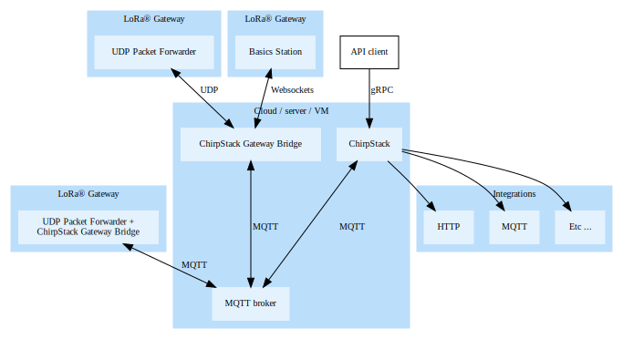

Chirpstack
Chirpstack is an open-source LoRaWAN Network Server stack that provides the essential components to build user-friendly web interfaces for device management. Chirpstack APIs are provided for integration purposes, allowing LoRaWAN stack to be easily integrated with applications.
Chirpstack is composed of three modules that work together for a client to be able to communicate with end-devices. These operate as follows.

Chirpstack Arquitecture - Image taken from Chirpstack Website
Gateway Bridge
The Chirpstack Gateway Bridge (CGB) is the module of Chirpstack LoRaWAN stack that converts the Packet Forwarder message payloads into a serialized data format (JSON or Protobuf) and publishes it in a Message Queuing Telemetry Transport (MQTT) server, to which the Network Server subscribes. The message will be published with a topic that indicates the source (by default the gateway MAC number and event type: up, down, status). This module can also be configured to support different types of packet forwarders.
Instalation
Requirements
Any MQTT broker for instance Mosquitto
Instalation
sudo apt install chirpstack-gateway-bridge
The configurations for the gateway bridge will be located at /etc/chirpstack-gateway-bridge/chirpstack-gateway-bridge.toml
Logs
journalctl -u chirpstack-gateway-bridge -f -n 50